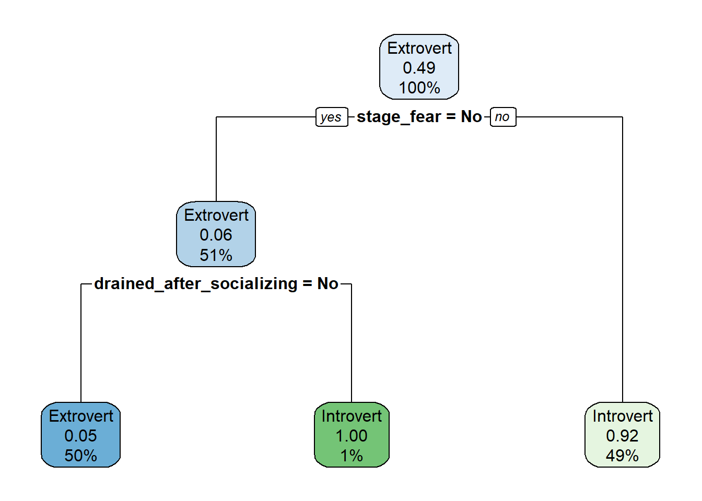
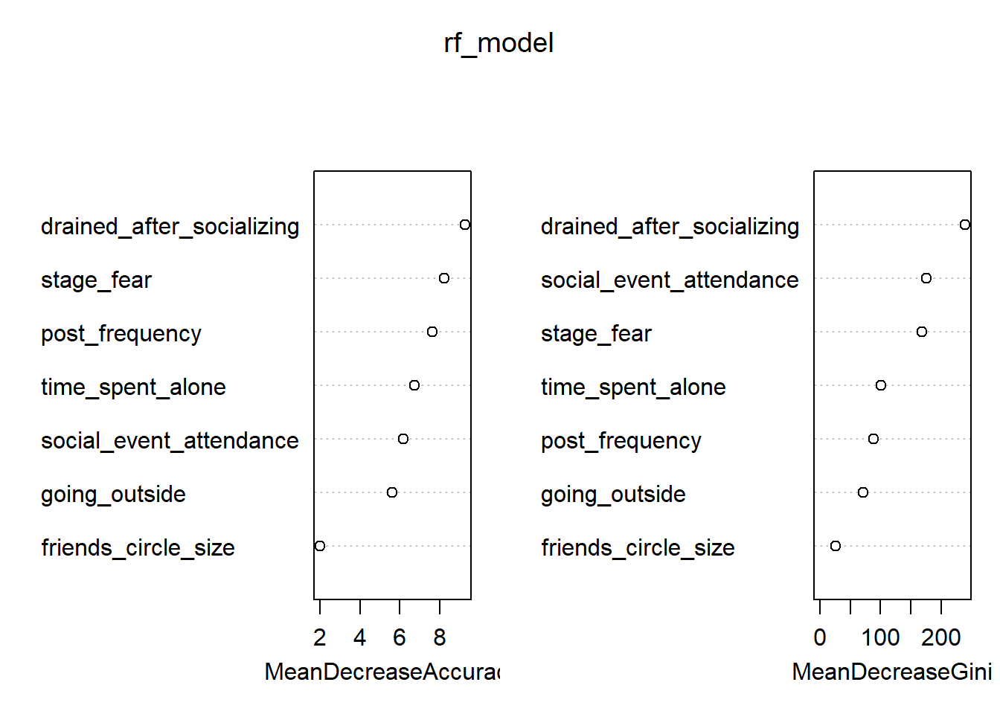

Decision trees are one of the most intuitive and powerful tools in machine learning and data science. They mimic the way humans make decisions: by asking a series of questions and following the answers down different paths. In this article, we’ll break down what decision trees are, define the most important terms, explore the different types of decision trees based on the kind of output they produce, and explain the key metrics used to evaluate them. By the end, you’ll have a clear understanding of how decision trees work and how to use them for both classification and regression problems.
What is a Decision Tree?
A decision tree is a flowchart-like structure used to make decisions or predictions. Each internal node of the tree represents a test or question about a feature (for example, “Is age > 30?”), each branch represents the outcome of the test, and each leaf node represents a final decision or prediction. Decision trees can be used for both classification (predicting categories) and regression (predicting numbers).
Imagine you want to decide whether to play tennis based on the weather. A decision tree might first ask, “Is it sunny?” If yes, it might then ask, “Is the humidity high?” and so on, until it reaches a decision like “Play” or “Don’t play.”
Key Terms in Decision Trees
Before we dive deeper, let’s define some important terms:
Root Node: The top node of the tree, where the first split or question is made.
Internal Node: Any node that splits into further branches (not a leaf).
Leaf Node (Terminal Node): The end node that gives the final output (class or value).
Branch: A path from one node to another, representing the outcome of a test.
Split: The process of dividing a node into two or more sub-nodes based on a feature.
Feature (Attribute): A variable or column in your dataset used to split the data.
Depth: The number of levels in the tree from the root to the deepest leaf.
Types of Decision Trees: Classification vs. Regression
Decision trees are divided into two main types, depending on the nature of the output variable:
1. Classification Trees (Categorical Output)
Classification trees are used when the target variable is categorical—that is, when you want to predict a class or label (such as “spam” vs. “not spam,” or “disease” vs. “no disease”). At each node, the tree asks a question that splits the data into groups that are more homogeneous with respect to the target class.
Example: Suppose you want to predict whether a loan applicant will default (“Yes” or “No”). The tree might split on features like income, credit score, or employment status, eventually leading to a prediction at the leaf node.
Key Metrics for Classification Trees
To decide the best way to split the data at each node, classification trees use metrics that measure how “pure” or homogeneous the resulting groups are. The most common metrics are:
Gini Impurity: Measures how often a randomly chosen element would be incorrectly labeled if it was randomly labeled according to the distribution of labels in the node. Lower Gini means purer nodes.
Entropy (Information Gain): Measures the amount of disorder or uncertainty. Splits that reduce entropy the most are preferred.
How to choose splits: At each node, the algorithm tries all possible splits and chooses the one that results in the greatest reduction in impurity (Gini or Entropy).
Evaluation Metrics: After building the tree, we evaluate its performance using metrics such as: * Accuracy: The proportion of correct predictions. * Precision, Recall, F1 Score: Useful for imbalanced datasets. * Confusion Matrix: Shows the counts of true positives, false positives, etc.
2. Regression Trees (Quantitative Output)
Regression trees are used when the target variable is continuous or numerical (such as predicting house prices or temperatures). Instead of predicting a class, the tree predicts a number.
Example: Suppose you want to predict the price of a house based on features like size, location, and number of bedrooms. The regression tree splits the data at each node to minimize the difference between the predicted and actual values.
Key Metrics for Regression Trees
To choose the best splits, regression trees use metrics that measure how well the split reduces the variability of the target variable. The most common metrics are:
Mean Squared Error (MSE): The average of the squared differences between predicted and actual values.
Mean Absolute Error (MAE): The average of the absolute differences between predicted and actual values.
How to choose splits: At each node, the algorithm tries all possible splits and chooses the one that results in the greatest reduction in error (MSE or MAE).
Evaluation Metrics: After building the tree, we evaluate its performance using metrics such as: * R-squared (R²): Measures how well the model explains the variability of the target. * Root Mean Squared Error (RMSE): The square root of MSE, in the same units as the target.
Advantages and Limitations of Decision Trees
Advantages:
Easy to understand and interpret.
Can handle both numerical and categorical data.
Require little data preparation.
Can model non-linear relationships.
Limitations:
Prone to overfitting (creating trees that are too complex and fit the training data too closely).
Can be unstable—small changes in data can lead to different trees.
Less accurate than some other algorithms (like random forests or boosting) on complex problems.
Step-by-Step Example: Building a Decision Tree to Predict Personality Type
Let’s walk through a practical example using R, where we predict whether a person is an introvert or extrovert using a decision tree. We’ll cover every step: reading the data, cleaning it, splitting into training and test sets, building the tree, evaluating it, and pruning for better performance.
1. Reading and Inspecting the Data
First, we load the necessary libraries and read the dataset directly from the provided URL. We’ll use Quarto chunk options to suppress warnings and messages for a cleaner output.
library(readr)library(janitor)library(dplyr)library(rpart)library(rpart.plot)library(caret) # for train/test split# Read the datadf <-read_csv("https://raw.githubusercontent.com/IKSHRESTHA/Actuarial-Reflections/refs/heads/main/data/06272925/personality_datasert.csv") |> janitor::clean_names()# Inspect the datastr(df)
time_spent_alone stage_fear social_event_attendance going_outside
Min. : 0.000 Length:2900 Min. : 0.000 Min. :0
1st Qu.: 2.000 Class :character 1st Qu.: 2.000 1st Qu.:1
Median : 4.000 Mode :character Median : 3.963 Median :3
Mean : 4.506 Mean : 3.963 Mean :3
3rd Qu.: 7.000 3rd Qu.: 6.000 3rd Qu.:5
Max. :11.000 Max. :10.000 Max. :7
drained_after_socializing friends_circle_size post_frequency
Length:2900 Min. : 0.000 Min. : 0.000
Class :character 1st Qu.: 3.000 1st Qu.: 1.000
Mode :character Median : 5.000 Median : 3.000
Mean : 6.269 Mean : 3.565
3rd Qu.:10.000 3rd Qu.: 6.000
Max. :15.000 Max. :10.000
personality
Length:2900
Class :character
Mode :character
The output above shows the structure and summary statistics of the dataset. You can see the variable types, ranges, and a quick overview of the data. This helps us understand what features are available and if there are any obvious data quality issues.
2. Preparing the Data
We’ll make sure the target variable (personality) is a factor, and check for missing values. We’ll also suppress warnings and messages in this chunk.
# Convert target to factordf$personality <-as.factor(df$personality)# Check for missing valuescolSums(is.na(df))
The output will show the number of missing values in each column. If all values are zero, there are no missing data to worry about. If not, you may need to handle them before modeling.
3. Splitting the Data: Train/Test Split
We’ll split the data into 70% training and 30% testing sets to evaluate our model’s performance on unseen data.
set.seed(123) # for reproducibilitytrain_index <-createDataPartition(df$personality, p =0.7, list =FALSE)train_data <- df[train_index, ]test_data <- df[-train_index, ]
This step ensures that our model is trained on one portion of the data and tested on another, helping us assess how well it generalizes to new cases.
4. Building the Decision Tree
Now, we’ll build a classification tree to predict personality using all other variables.
tree_model <-rpart(personality ~ ., data = train_data, method ="class", cp =0.01)# Visualize the treerpart.plot(tree_model)

The plot above shows the structure of the decision tree. Each node represents a split based on a feature, and the leaves show the predicted class (introvert or extrovert).
5. Evaluating the Model
We’ll use the test set to see how well our tree predicts introverts vs. extroverts.
pred <-predict(tree_model, test_data, type ="class")confusionMatrix(pred, test_data$personality)
Confusion Matrix and Statistics
Reference
Prediction Extrovert Introvert
Extrovert 412 29
Introvert 35 393
Accuracy : 0.9264
95% CI : (0.9069, 0.9428)
No Information Rate : 0.5144
P-Value [Acc > NIR] : <2e-16
Kappa : 0.8526
Mcnemar's Test P-Value : 0.532
Sensitivity : 0.9217
Specificity : 0.9313
Pos Pred Value : 0.9342
Neg Pred Value : 0.9182
Prevalence : 0.5144
Detection Rate : 0.4741
Detection Prevalence : 0.5075
Balanced Accuracy : 0.9265
'Positive' Class : Extrovert
The confusion matrix output will display the number of correct and incorrect predictions for each class. Accuracy, sensitivity, and specificity are also shown, helping you judge the model’s performance.
6. Pruning the Tree
Decision trees can overfit, so pruning helps simplify the tree and improve generalization. We’ll use the complexity parameter (cp) to prune.
# Choose the cp with lowest cross-validated errorbest_cp <- tree_model$cptable[which.min(tree_model$cptable[,"xerror"]), "CP"]# Prune the treepruned_tree <-prune(tree_model, cp = best_cp)# Visualize pruned treerpart.plot(pruned_tree)
# Evaluate pruned treepruned_pred <-predict(pruned_tree, test_data, type ="class")confusionMatrix(pruned_pred, test_data$personality)
Confusion Matrix and Statistics
Reference
Prediction Extrovert Introvert
Extrovert 412 29
Introvert 35 393
Accuracy : 0.9264
95% CI : (0.9069, 0.9428)
No Information Rate : 0.5144
P-Value [Acc > NIR] : <2e-16
Kappa : 0.8526
Mcnemar's Test P-Value : 0.532
Sensitivity : 0.9217
Specificity : 0.9313
Pos Pred Value : 0.9342
Neg Pred Value : 0.9182
Prevalence : 0.5144
Detection Rate : 0.4741
Detection Prevalence : 0.5075
Balanced Accuracy : 0.9265
'Positive' Class : Extrovert
After pruning, the tree is simpler and less likely to overfit. The new confusion matrix shows how well the pruned tree performs on the test data. Compare this to the previous results to see if pruning improved generalization.
Summary
We loaded and cleaned the data (with warnings suppressed for clarity).
Split it into training and test sets.
Built and visualized a decision tree to predict personality type.
Evaluated its performance with a confusion matrix.
Pruned the tree and compared results.
This step-by-step approach helps you understand not just how to build a decision tree, but also how to interpret the output and ensure it performs well on new, unseen data.
Advanced Tree Methods: Bagging, Random Forest, and Boosting
As powerful as decision trees are, they have some limitations—most notably, they can be unstable and prone to overfitting. To address these issues and achieve better predictive performance, data scientists use advanced ensemble methods that combine many trees. The three most popular are bagging, random forests, and boosting. Let’s explore each, their differences, and when to use them.
Bagging (Bootstrap Aggregating)
Bagging is short for “bootstrap aggregating.” The idea is simple: build many decision trees, each on a different random sample (with replacement) of the training data, and then average their predictions (for regression) or take a majority vote (for classification).
How it works:
Draw multiple bootstrap samples from the training data.
Train a separate decision tree on each sample.
For prediction, aggregate the results (average or majority vote).
Strengths:
Reduces variance and helps prevent overfitting.
Each tree is independent, so the method is easy to parallelize.
Limitations:
All features are considered at each split, so trees can be highly correlated if some features are very strong predictors.
Example: Bagging is implemented in R with the bagging() function from the ipred package, or by setting method = "treebag" in the caret package.
Random Forest
Random forest is an extension of bagging that adds an extra layer of randomness. In addition to using bootstrap samples, random forest also selects a random subset of features at each split in the tree. This decorrelates the trees, making the ensemble even more robust.
How it works:
Like bagging, but at each split, only a random subset of features is considered.
This means each tree is more different from the others, reducing correlation.
Strengths:
Even lower variance and better generalization than bagging.
Handles large datasets and many features well.
Provides feature importance measures.
Limitations:
Less interpretable than a single tree.
Can be slower to train and predict with very large forests.
Example: Random forest is implemented in R with the randomForest package or by setting method = "rf" in caret.
Boosting
Boosting is a different approach: instead of building trees independently, it builds them sequentially. Each new tree focuses on correcting the errors of the previous ones. The final prediction is a weighted combination of all trees.
How it works:
Trees are built one after another.
Each tree tries to fix the mistakes of the previous trees by giving more weight to misclassified points.
Predictions are combined (often by weighted sum or vote).
Strengths:
Can achieve very high accuracy.
Often outperforms bagging and random forest on complex problems.
Limitations:
More sensitive to noise and outliers.
Can overfit if not properly tuned.
Slower to train, as trees are built sequentially.
Example: Popular boosting algorithms include AdaBoost (adabag package in R), Gradient Boosting Machines (gbm package), and XGBoost (xgboost package).
Key Differences
Method
Trees Built
Feature Selection
Aggregation
Strengths
Limitations
Bagging
Parallel
All features
Average/Vote
Reduces variance
Trees can be correlated
Random Forest
Parallel
Random subset
Average/Vote
Lower variance, robust
Less interpretable
Boosting
Sequential
All or subset
Weighted sum/vote
High accuracy, flexible
Sensitive to noise, slower
When to Use Each Method
Bagging: When you want a simple way to reduce variance and your trees are overfitting.
Random Forest: When you want strong performance out-of-the-box, especially with many features or large datasets.
Boosting: When you need the highest possible accuracy and are willing to tune parameters and accept longer training times.
In practice, random forest is often the first ensemble method to try, as it balances accuracy, robustness, and ease of use. Boosting can deliver even better results, but requires more careful tuning.
Step-by-Step: Bagging, Random Forest, and Boosting with R
Let’s apply bagging, random forest, and boosting to the same personality dataset, following the same clear, step-by-step approach as before. We’ll use the caret, randomForest, and gbm packages for these examples. Make sure these packages are installed before running the code.
1. Bagging (Bootstrap Aggregating)
library(ipred) # for bagging# Bagging modelbag_model <-bagging(personality ~ ., data = train_data, coob =TRUE)# Predict on test databag_pred <-predict(bag_model, test_data, type ="class")confusionMatrix(bag_pred, test_data$personality)
Confusion Matrix and Statistics
Reference
Prediction Extrovert Introvert
Extrovert 407 39
Introvert 40 383
Accuracy : 0.9091
95% CI : (0.888, 0.9274)
No Information Rate : 0.5144
P-Value [Acc > NIR] : <2e-16
Kappa : 0.818
Mcnemar's Test P-Value : 1
Sensitivity : 0.9105
Specificity : 0.9076
Pos Pred Value : 0.9126
Neg Pred Value : 0.9054
Prevalence : 0.5144
Detection Rate : 0.4684
Detection Prevalence : 0.5132
Balanced Accuracy : 0.9090
'Positive' Class : Extrovert
Bagging builds multiple trees on bootstrapped samples and aggregates their predictions. The confusion matrix shows the accuracy and class-wise performance of the bagged ensemble.
2. Random Forest
library(randomForest)# Random forest modelrf_model <-randomForest(personality ~ ., data = train_data, ntree =100, importance =TRUE)# Predict on test datarf_pred <-predict(rf_model, test_data)confusionMatrix(rf_pred, test_data$personality)
Confusion Matrix and Statistics
Reference
Prediction Extrovert Introvert
Extrovert 412 28
Introvert 35 394
Accuracy : 0.9275
95% CI : (0.9082, 0.9438)
No Information Rate : 0.5144
P-Value [Acc > NIR] : <2e-16
Kappa : 0.855
Mcnemar's Test P-Value : 0.4497
Sensitivity : 0.9217
Specificity : 0.9336
Pos Pred Value : 0.9364
Neg Pred Value : 0.9184
Prevalence : 0.5144
Detection Rate : 0.4741
Detection Prevalence : 0.5063
Balanced Accuracy : 0.9277
'Positive' Class : Extrovert
# Feature importance plotvarImpPlot(rf_model)

Random forest builds many trees, each considering a random subset of features at each split. The confusion matrix shows the model’s performance, and the variable importance plot highlights which features are most influential.
3. Boosting (Gradient Boosting Machine)
library(gbm)# For gbm, all predictors must be numeric, ordered, or factor.# Convert character columns to factors in train and test datatrain_data_gbm <- train_datafor (col innames(train_data_gbm)) {if (is.character(train_data_gbm[[col]])) { train_data_gbm[[col]] <-as.factor(train_data_gbm[[col]]) }}test_data_gbm <- test_datafor (col innames(test_data_gbm)) {if (is.character(test_data_gbm[[col]])) { test_data_gbm[[col]] <-as.factor(test_data_gbm[[col]]) }}# Encode personality as 0/1 for gbmtrain_data_gbm$personality_num <-ifelse(train_data_gbm$personality =="Introvert", 0, 1)test_data_gbm$personality_num <-ifelse(test_data_gbm$personality =="Introvert", 0, 1)# Fit GBM model (distribution = "bernoulli" for binary classification)gbm_model <-gbm(personality_num ~ . -personality, data = train_data_gbm, distribution ="bernoulli", n.trees =100, interaction.depth =3, shrinkage =0.05, n.minobsinnode =10, verbose =FALSE)# Predict probabilities and convert to classgbm_probs <-predict(gbm_model, test_data_gbm, n.trees =100, type ="response")gbm_pred <-ifelse(gbm_probs >0.5, "Extrovert", "Introvert")gbm_pred <-factor(gbm_pred, levels =levels(test_data$personality))confusionMatrix(gbm_pred, test_data$personality)
Confusion Matrix and Statistics
Reference
Prediction Extrovert Introvert
Extrovert 412 28
Introvert 35 394
Accuracy : 0.9275
95% CI : (0.9082, 0.9438)
No Information Rate : 0.5144
P-Value [Acc > NIR] : <2e-16
Kappa : 0.855
Mcnemar's Test P-Value : 0.4497
Sensitivity : 0.9217
Specificity : 0.9336
Pos Pred Value : 0.9364
Neg Pred Value : 0.9184
Prevalence : 0.5144
Detection Rate : 0.4741
Detection Prevalence : 0.5063
Balanced Accuracy : 0.9277
'Positive' Class : Extrovert
Boosting builds trees sequentially, each focusing on correcting the errors of the previous ones. The confusion matrix shows the boosted model’s performance. You can tune parameters like n.trees and shrinkage for better results.
Summary:
We applied bagging, random forest, and boosting to the same dataset.
Each method was evaluated using a confusion matrix for easy comparison.
Random forest also provides a feature importance plot to interpret which variables matter most.
This hands-on approach helps you see the practical differences between these advanced tree ensemble methods and how to implement them in R.